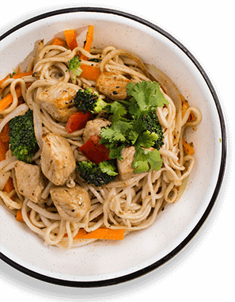

Bienvenido a THE WOK STATION una opción saludable, versátil y urbana para los amantes de la cocina oriental sin pretensiones. Somos especialistas en el manejo del WOK un utensilio básico de la cocina asiática y hoy adoptado por culturas de todo el mundo, que nos permite ofrecer una gran variedad de platillos preparados al momento que conservan el sabor, textura y propiedades de todos sus ingredientes.